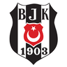

BeşiktaşModel, Beşiktaş'ın deplasmanda kazanma ihtimalini %65 görüyor ve bu konuda piyasadan yaklaşık 4.5 puan daha iyimser. Kasımpaşa'nın kazanma ihtimali ise yalnızca %15. Tarzlar belirgin biçimde ayrışıyor: Beşiktaş topun %56'sına sahip olup maç başına 16.3 şut üreten, erken vurmaya çalışan bir takım. Topu rakibe bırakan Kasımpaşa ise daha az şut çekse de isabetli şutlarını gole çevirmede rakibinden daha başarılı (0.36'ya 0.29). Bu yüzden maçın senaryosu ilk golü kimin atacağına bağlı. Kasımpaşa devreyi önde kapattığı maçların %81'ini kazanmış. Beşiktaş ise devreyi geride kapattığında bile maçların yarısından fazlasında puan çıkarabilmiş. Beklenen goller 1.30'a 1.43 kadar birbirine yakın ve karşılıklı gol ihtimali %55. Bu da Beşiktaş'ın üstünlüğünün skor tabelasına farklı bir galibiyetten çok 0-1 ya da 1-1 gibi dar bir sonuç olarak yansımasının daha olası olduğuna işaret ediyor. Kasımpaşa 29 Ekim'de kupada Çorluspor 1947 ile oynayıp bu maça kısa bir arayla geliyor. Beşiktaş cephesinde ise Olympiakos maçı öncesinde iki eksik ve iki şüpheli oyuncu olduğu bildirildi, ama haberlerde isim geçmiyor.